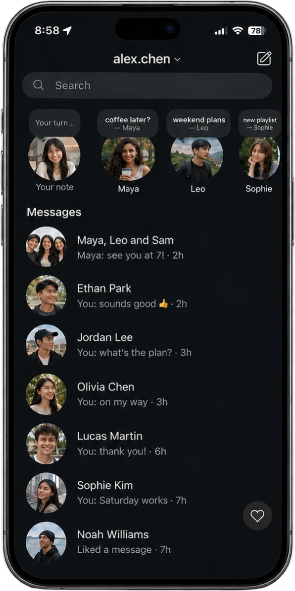
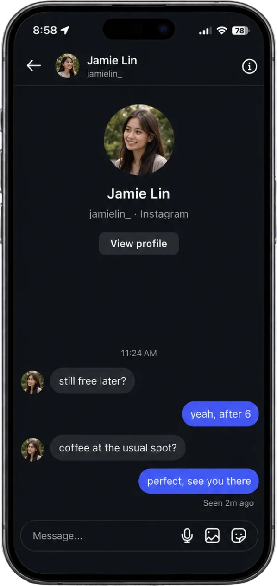
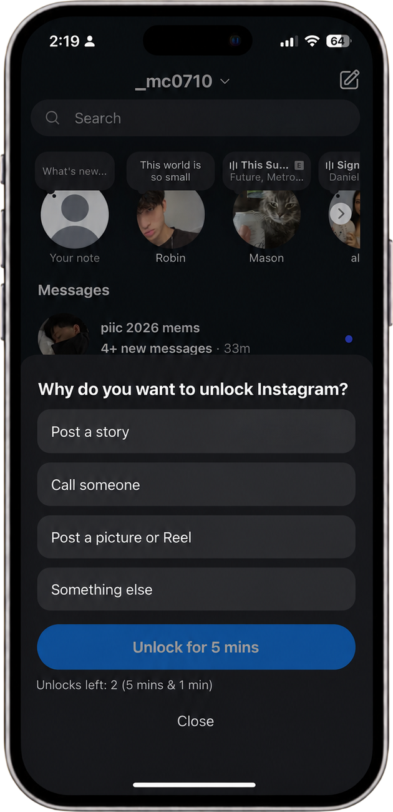

You sign in directly on Instagram.
Konvo does not see or store your password.
Your DMs and friends’ Stories still work.
Pick the one that is most true.
Best guess is fine.
An estimate is fine.
At your current pace, Instagram is on track to take
of your life distracted on your phone.
Tap to continue
But staying connected only takes a fraction of that.
You don’t have to give up DMs or Stories.
Konvo could help you get back
of your life.
They’re removed completely, so there’s nothing pulling you into a scroll.

DMs, group chats, voice notes and friends’ Stories still work.

Two 5 minute passes to unlock the Instagram app, post a story or Reel, or call someone.
